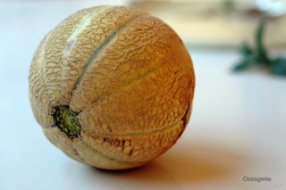

Month: August 2006
A melon made sippable
For someone who expends a lot of energy on her meals, I’m a tad lazy when it comes to their attendant beverages. I mean, I like a good glass of wine—or beer, or Lillet, or port, or gin—as much as the next girl, but for me, it’s kind of an afterthought. I need something to moisten the taste buds, of course, but it’s secondary to the meal itself. In some circles, this is tantamount to blasphemy, I know, but eh, well, it’s just the way I am.
I could, I guess, blame it on my laughable inability to hold my liquor. (Legend has it that I once had a couple of beers and, with a slow roll of the head, innocently asked, “How many sheets to the wind is it, again?”) But that’s not entirely it. After all, the second-class status of beverages in my book is not limited to those alcoholic. Heck, I can’t even remember the last time I had a cup of tea or coffee—an admission that may cause me to lose, sob!, all social standing in Seattle—and come to think of it, I seem to only drink juice on special mornings involving menus and waitresses and tables sticky with syrup. Most of the time, I just drink water. I am very well hydrated, and boring. But give me a beer, and I swear, I can make up for the boring part before the bottle is even empty. You won’t believe how entertaining I am.
Now, all this said, you can well imagine my surprise when, yesterday evening, as the clock turned to dinner, my eye fell upon a ripe French Orange melon in our refrigerator, and my first instinct was oddly not to slice it and eat it, but rather to sip it, of all things. This melon would have been fine, mind you, on the end of a fork or cradled in a spoon, but something took hold of me, and by god, it wanted a beverage.

So, working from a rough soup recipe that came with our CSA box, we whizzed together cubes of juicy melon with wine, lime juice, a pinch of salt, and just enough sugar to make the fruit sit up and sing. For this type of melon, it didn’t take much: a hybrid cross between the smooth-skinned French Charentais melon and the more nubbly, netted-skinned American cantaloupe, the dainty French Orange has sweet, dense, silky flesh and a rich, pregnant aroma that fills the kitchen. Its flavor is not unlike a cantaloupe—but the best cantaloupe to ever cross your lips. And made sippable with lime and sauvignon blanc, cross the lips it does, easily.
A glass of this would make a perfect partner for a platter of prosciutto or Serrano ham, or slices of baguette with butter, radish slivers, and salt. We quaffed ours with a salad of sliced lemon cucumbers, which we then chased with warm ratatouille, poached eggs, and baguette. With the possible exception of the melon itself, straight up, it’s hard to imagine anything better suited to a late-August evening. And for a beverage, you know, that means a lot.
Melon Made Sippable
Adapted from Willie Green’s Organic Farm and Renee Erickson of Boat Street Café

This cool, refreshing sip comes together in five minutes flat, and served icy cold, it’s my new favorite way to start a late-summer dinner. Be sure to start with a cold melon and cold wine: you’ll want to serve this chilled, so using cold ingredients is a good head start.
{kind=link}
1 ripe French Orange melon (~2 pounds), or a really good cantaloupe
½ Tbs granulated sugar, or more, depending on melon’s sweetness
Juice of ½ lime, or to taste
½ cup light, crisp white wine, such as sauvignon blanc
A pinch of salt
A few sprigs of fresh mint, for garnish
Quarter the melon, and scoop out the seeds. Working with one quarter at a time, set the wedge on its side to steady it, and then carefully trim the skin away from the flesh with a sharp knife. Discard the skin, and cut the flesh into rough chunks.
In a blender, purée the melon with the sugar, lime juice, wine, and salt. Taste, and adjust as needed.
Refrigerate until thoroughly chilled: if you’ve started with a cold melon and cold wine, you won’t have to wait long. Stir well before serving—the liquids tend to separate slightly from the suspended solids—and finish with a garnish of mint, if you like.
Yield: 2 (or 3 modest) servings
List-maker, tart-baker
I am a list-maker. In fact, if I were deemed eligible for some sort of “World Champion” title, it would most likely be for my skill at making lists, although I am awfully good at lip-synching too, and crying, and balancing my checkbook, and scraping my breakfast bowl clean. (“What are you hammering in there?” Brandon yells from the bedroom. “Let me guess—a nail in the baseboard? No, no, wait! A birdfeeder for the backyard? No, no, I know! Your breakfast!” he shouts, ever the wise guy, over the ping! ping! ping! of my spoon against the bowl.) Yes, as I was saying, I am good at many, many things, but I am a true champion at lists. I love…
Read moreA reconciliation, with sorbet
As a kid, I was no fan of summer. I grew up in Oklahoma, where the season is “hotter than h-e-l-l,” as my grandmother likes to say. For me, summer was a sort of sustained misery. The problem was the temperature, plain and simple, which hovers most days in the upper double digits or even lower triples. It’s a still, airless type of heat, the kind that comes with a loud, unceasing soundtrack of cicadas. I used to feel sorry for even the family car, sitting as it did out in the sun: it shimmered under a haze of heat, and when we tried to start it, the poor thing would sputter and whine in protest. Not even a machine…
Read moreOn cold soup
When it comes to cold soups, I’m of two minds. Part of me says that cold soup is as close as it gets to perfect summer fare. I mean, it’s only logical: so many of the season’s fruits and vegetables take well to cold preparations, and anyway, there’s something about a hot, steamy day that begs for a cool, quenching soup. But the other part of me can’t quite get behind it. Sometimes savory flavors don’t sit right when served cold and puréed: the taste doesn’t seem to fit the temperature and texture. Cold soups can taste harsh and kind of squeaky in the mouth, but their flavors seem somehow muted too, without the aroma and richness of their warmer…
Read moreOrangette turns two
Hooooo boy. I just don’t know where the time goes. You wake up one morning, start a blog, and all of a sudden, two years have gone by. It makes me feel a little like my mother, who greets my birthday each year with the same slightly bewildered question: “How can it possibly be that my daughter is [insert ever-increasing number here] years old?” I mean, really, people, how can it possibly be that my Orangette is two years old? I tell you, I just don’t know where the time goes. This sort of occasion seems to call for a new unit of measurement, something more expressive than boring old calendar days. They’re too intangible, anyway. They don’t mean much.…
Read more